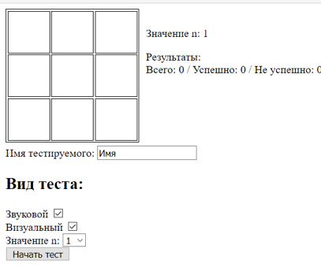
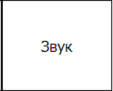
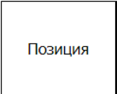
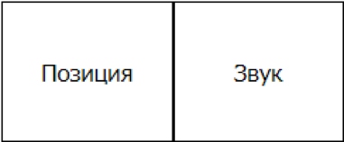
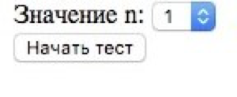
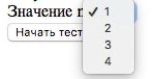

Значение n:
Раундов осталось:
Результаты:
Ваша задача состоит в том, чтобы указать, при помощи нажатия кнопок,
совпадают ли произнесенная буква и подсвеченная ячейка с тем, что показывалось
1 позицию назад (1 уровень),
2 позиции назад (2 уровень),
или 3 позиции назад (3 уровень),
и так далее. Всего 4 уровня.
Если совпадает и буква, и ячейка, нажимаете на обе кнопки (желательно, как можно быстрее).
Один раз проходите каждый уровень для тренировки, второй раз уже контрольный.
Шаг 1. Вводим имя
Шаг 2. Нажимаем на кнопку «Начать тест» 
Шаг 3. Диктор произносит букву, подсвечивается ячейка. Запоминаем букву и ячейку. Никуда не нажимаем.
Шаг 4. Диктор снова произносит букву, подсвечивается ячейка. Если:
А) Диктор произнес ту же букву, нажимаем «Звук» 
Б) Подсветилась та же ячейка, нажимаем «Позиция» 
В) Совпало все вместе, и буква, и ячейка, нажимаем обе кнопки. 
Г) Ничего не совпало, буква другая, ячейка подстветилась другая, ничего не нажимаем.
Шаг 5. Произносится буква, посвечивается ячейка, следуем сценарию из шаг 4 (см. подпукнты)
Таким образом проходятся все 4 уровня, однако 4 уровень необязателен
для прохождения.
Уровни можно менять следующим образом:
1.

2. 